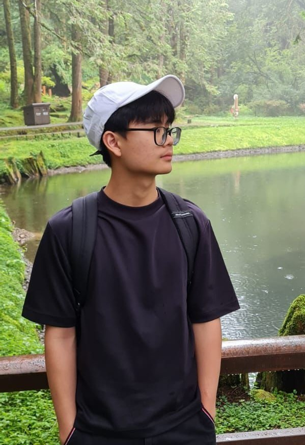
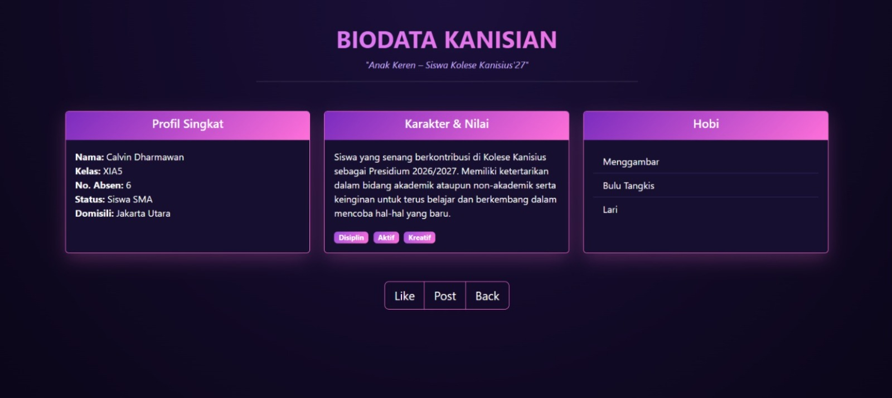
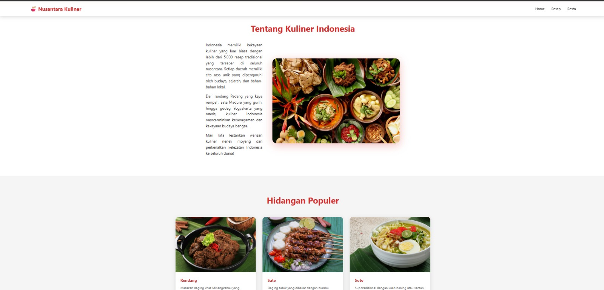

Halo, Aku
Calvin Dharmawan
Passionate tentang web development & teknologi masa depan.

Siapa Aku? ☆
Perkenalkan, saya Calvin Dharmawan, siswa kelas 11 di SMA Kolese Kanisius. Saya memiliki minat dan ketertarikan yang tinggi dalam bidang pengembangan web karena menurut saya teknologi website memiliki peran yang sangat besar dalam kehidupan modern. Saya tertarik mempelajari bagaimana sebuah website dapat dirancang tidak hanya agar terlihat menarik, tetapi juga dapat berfungsi dengan baik dan memberikan pengalaman yang nyaman bagi pengguna.
Pengalaman belajar TIK saya diperoleh selama kurang lebih lima tahun belajar di Kolese Kanisius. Selain itu, saya juga banyak belajar secara mandiri melalui video pembelajaran di YouTube dan pernah mempelajari sedikit tentang competitive programming atau informatika.
Tujuan saya mempelajari pemrograman web adalah agar saya dapat menciptakan website yang bermanfaat dan memberikan dampak positif bagi banyak orang. Menurut saya, website bukan hanya sekadar media digital, tetapi juga sarana untuk menyampaikan informasi, membangun komunikasi, dan membantu berbagai aktivitas masyarakat menjadi lebih mudah dan efisien.
Tabel Nilai ☆
| # | Materi | Nilai | Grade | Progress |
|---|---|---|---|---|
| 01 | Laporan Mini Project | 100 | A+ | |
| 02 | Nilai Ulangan Harian Bootstrap | 85 | B | |
| 03 | Tugas Website Biodata | 100 | A+ | |
| 04 | Analisis Javascript Mini Project | 90 | A | |
| 05 | Mengembangkan Website yang Sudah Dibuat | — | – |
Projects Saya ☆

